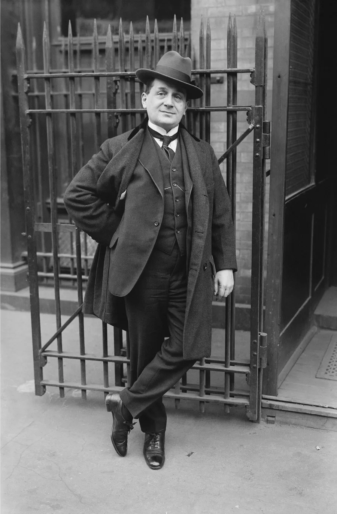
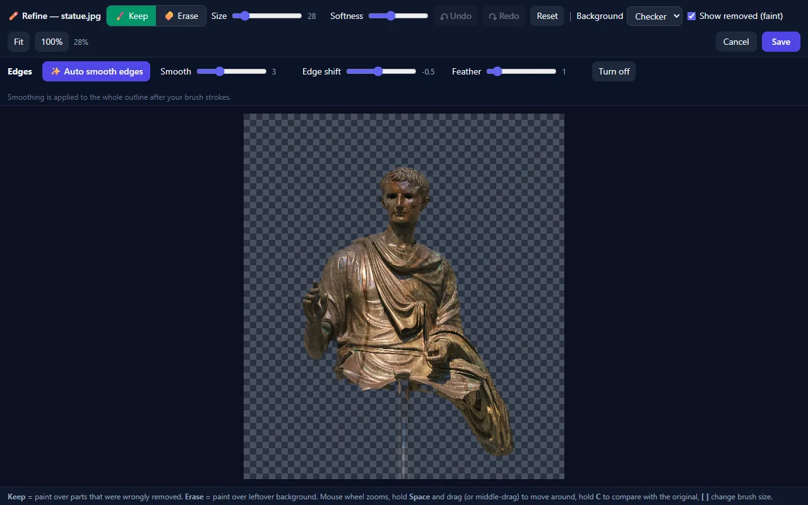

Edit, convert and transcribe without uploading a thing.
NQ All-in-1 MediaTool is a Windows app with 11 tools: background remover, photo and video converters, PDF and spreadsheet tools, and speech to text. It all runs on your own PC.
Free tester build, 237 MB. Works for 30 days from first use.
- No account or sign-up
- Your files never leave your PC
- Windows 10 and 11

OriginalCut-outEverything you keep opening five websites for
One window, one download. Add a whole folder and the app works through every file for you.
Photos
- Remove Background
- People, products and animals. Save it transparent, on white or any colour, cropped square for online store listings.
- Refine
- Paint Keep or Erase over any spot the AI missed, then smooth the edges for your website or shop.
- Image Converter
- PNG, JPG, WebP, AVIF, GIF and TIFF. Opens iPhone HEIC photos too.
- Compress Image
- Much smaller files that still look the same.
- Enhance Image
- AI upscaling that uses your graphics card.
Video
- Video Converter
- MP4, MKV, MOV, WebM, AVI or GIF. Pull out the audio as MP3.
- Compress Video
- Shrink big recordings with H.265, with optional NVIDIA GPU encoding.
- Enhance Video
- Sharpen old or low-resolution clips with AI upscaling.
Documents
- PDF & Documents
- PDF to text, Word or images, and back again. Scanned pages are read with OCR.
- Spreadsheets & Tables
- Excel, CSV, ODS, HTML, JSON and PDF. Pull tables out of PDFs straight into Excel.
- Image to Text
- Copy the words out of any picture or screenshot.
Voice
- Speech to Text
- Turn audio or video into text or subtitles, or record straight from your microphone. Understands accents, in English and Filipino.
- Batch mode
- Drop in a folder of 200 photos or recordings and walk away.
When the AI misses a spot, you fix it in seconds
Every cut-out opens in the Refine editor. Paint Keep to bring back something that was removed, paint Erase to clear leftover background. Then press Auto smooth edges for a clean outline.


Speech to text that copes with real voices
We tested it on 45 recordings of English spoken with accents from 11 language backgrounds, including Indian, Chinese, Japanese, Spanish and Polish speakers. Pick the level that fits the job.
Standard
Fastest. Good for clear speech and quick drafts.
Better
The balanced choice, and the default. Noticeably fewer mistakes on accented speech.
High accuracy
Best for strong accents and important recordings. In our test it made about one third fewer word errors than Standard. It is slower, since it runs on your processor.
Results come from our own test and will vary with your recording quality. The app also cleans up the audio and skips silence before transcribing.
Your files stay on your computer. All of them.
No accounts, no tracking
There is no sign-up, no analytics and no cloud. The app never uploads what you open.
The internet is optional
You only go online once to download the AI models you choose, such as 196 MB for Remove Background. After that, everything works with the cable unplugged.
Your originals are safe
Results are saved as new files next to the original. The app never overwrites your photo, video or document.
Try it free for 30 days
The tester build has every tool unlocked. Tell me what works and what doesn't, and I'll keep improving it.
Download for Windows (237 MB)- Download and double-clickThere is nothing to install. It is a single file.
- If Windows says "Windows protected your PC"Click More info, then Run anyway. The tester build is not code-signed yet.
- Wait for the launch screenThe app unpacks itself every time it starts, so the first window can take 10 to 30 seconds.
3FF6E562684F73F33F0BC49AA2449418DC574B50374B7E62B661DC21C8B91BCD
- Windows 10 or 11, 64-bit
- 8 GB RAM recommended
- About 1 GB free disk space
- A Vulkan graphics card for AI upscaling
Questions people ask
Does it really work without internet?
Yes. Internet is only used to download the optional AI models the first time you pick them. Once they are on your PC, every tool works offline.
What happens after the 30 days?
The app shows "Testing period is over. Contact kneelq@gmail.com to avail the pro version." and stops opening files. Your own files and results are untouched.
Why does Windows show a warning?
The tester build is not code-signed yet, so Windows is cautious about any new program. Click More info, then Run anyway. You can compare the SHA-256 above with your download to be sure it is genuine.
How good is the background removal?
Very good on clear subjects, and it works on people, products and pets. Dark clothing with white graphics, hair touching the edge of the picture and very busy backgrounds can leave spots. That is what Refine is for.
Can I use it on a Mac or a phone?
Not yet. This first version is Windows only.
Which files can it open?
Photos in JPG, PNG, WebP, AVIF, GIF, TIFF, BMP and iPhone HEIC. Common video and audio formats, PDF, Word (.docx), Excel, CSV and more.
Want the Pro version?
Longer licences and the full toolset for people who use it every day. Tell me what you need and I'll get back to you.